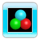

Se dirige vers le VAUS en se déplaçant de gauche à droite.
Konerd
Se dirige vers le VAUS en faisant des cercles.
Trisphère

Frapper une trisphère (n'importe où sauf au centre) la fait éclater en 3 sphères. Elles se déplaceront sur l'écran jusqu'à ce qu'elles touchent et détruisent une brique ou un ennemi, disparaissant par la même occasion.
Pyradok
Fait un cercle, puis se dirige vers le VAUS.
Klacker
Se déplace en suivant une trajectoire aléatoire.
Valion
Se déplace verticalement et renvoie tout ce qui le touche. Il ne peut être détruit. Vous gagnez des points si vous arrivez à le toucher avec la balle.